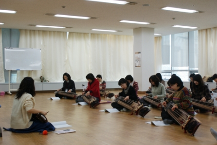

교사 국악직무연수 Gugak Training for Teachers
- 대상
- 전국 초중등 교원
- 강사
- 국립부산국악원 연주단원, 외부 강사
- 일시/장소
- 동계연수: 1. 10.(화)~14(토), 10:00~16:50 교육체험관 하계연수: 8. 1.(화)~5.(토), 10:00~16:50 교육체험관
- 수강료
- 30,000원
아이들의 눈높이를 찾아가는 교사들의 국악 삼매경
부산광역시시교육청 교육연수원과 연계하여 음악교과서에 수록된 국악(가창, 기악, 이론 및 감상)의 교수학습법을 배울 수 있는 연수 프로그램. 교육 경험이 풍부한 전문 강사로부터 학교 수업에 적용 가능한 지도법을 익히고, 국립부산국악원 공연도 함께 관람한다. 이론과 실기를 겸함으로써 교사들의 국악 지도 역량을 키워주는 교육으로 꾸준한 인기몰이를 하고 있다.
세부프로그램
초등 국악이론 및 감상의 이해, 초등 가창 배우고 가르치기, 초등 기악 신명나게 가르치기, 공연 관람
